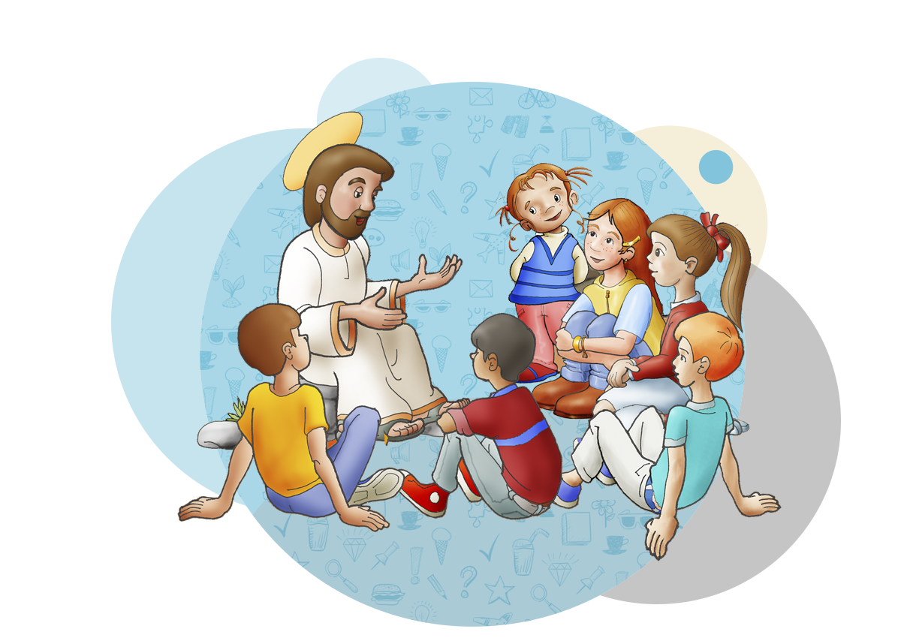

La parroquia ofrece catequesis para todas las edades, con el objetivo de formar discípulos comprometidos con su fe.
- Primera Comunión: Sábados a las 10:00 a.m.
- Confirmación: Domingos después de misa de 9:00 a.m.
- Catequesis para adultos: Miércoles a las 6:30 p.m. en el salón parroquial.
Para inscribirse, pueden dirigirse a la oficina parroquial o llenar el formulario en la sección de Solicitudes.

El grupo de liturgia se encarga de animar y preparar las celebraciones eucarísticas, así como tiempos litúrgicos especiales.
- Ministros Extraordinarios de la Comunión
- Lectores y proclamadores de la Palabra
- Equipo de ambientación y ornato del templo
Reuniones: Cada segundo lunes del mes, 7:00 p.m. en el templo.
Espacio donde los jóvenes pueden encontrarse, formarse, compartir y vivir su fe en comunidad.
- Reuniones semanales: Viernes 7:00 p.m. - 9:00 p.m.
- Actividades: dinámicas, cine-foros, retiros, voluntariado, y formación espiritual.
- Edad: A partir de los 13 años.
Todos los jóvenes son bienvenidos, no se necesita inscripción previa. ¡Solo ganas de compartir!
Encargados de llevar la caridad de la Iglesia a las personas más necesitadas de la comunidad.
- Entrega mensual de diarios de alimentos a familias vulnerables.
- Campañas de recolección de ropa y útiles escolares.
- Voluntariado en visitas a enfermos y adultos mayores.
¿Deseás colaborar? Podés ofrecer víveres o tu tiempo. Consultá en oficina parroquial o por WhatsApp: +506 6170-5997.

Encargados de llevar la caridad de la Iglesia a las personas más necesitadas de la comunidad.
¿Deseás colaborar? Podés ofrecer víveres o tu tiempo. Consultá en oficina parroquial o por WhatsApp: +506 6170-5997.